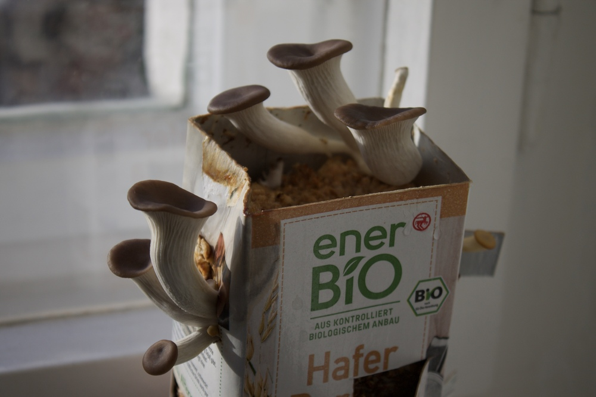
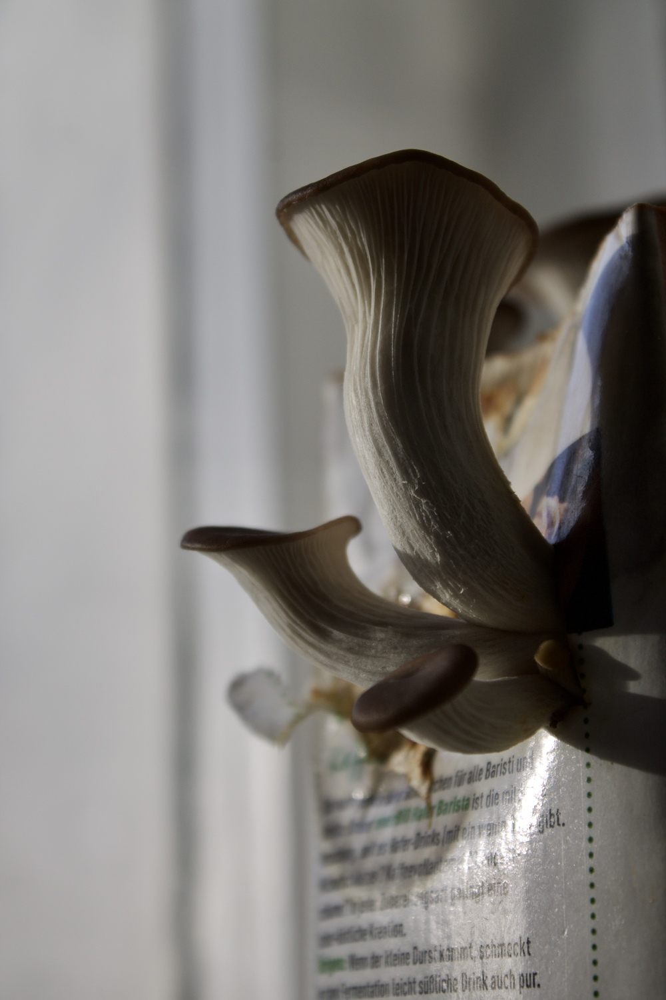
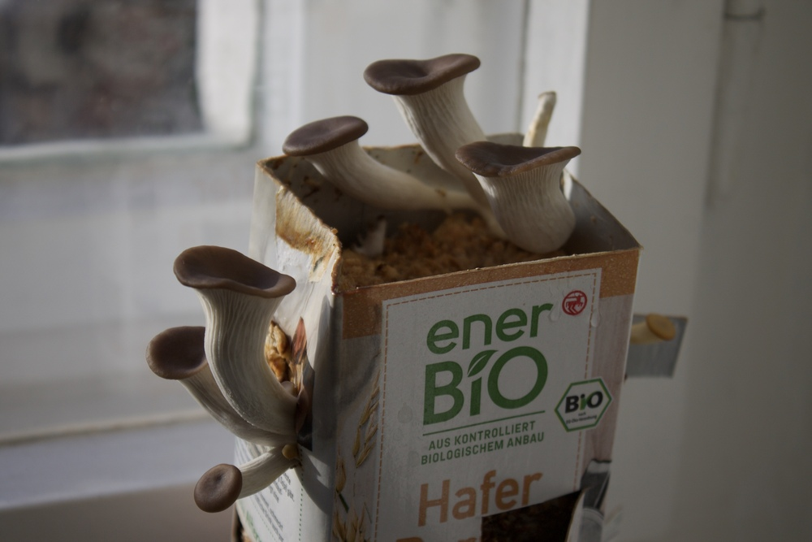
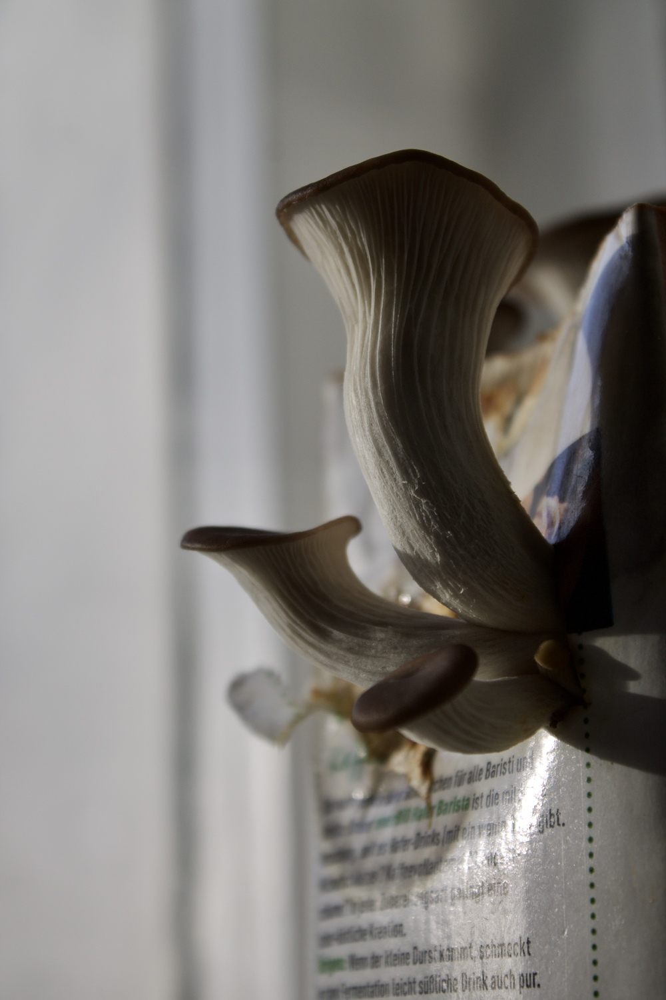

fungimental
2020, photos and podcast
Fungi are huge organisms with the smallest part visible: the fruit (which we know colloquially as mushrooms). What is mostly hidden from our perception is the vast root-like network that fungi form in the soil, called hyphae. Similar to the internet, trees and plants can communicate and form symbiotic relationships through these networks. This analogy of fungi and the World Wide Web makes me wonder: what can we, as humans, learn from these fascinating organisms?
 



Podcast: Fungimental (unfortunately german only)